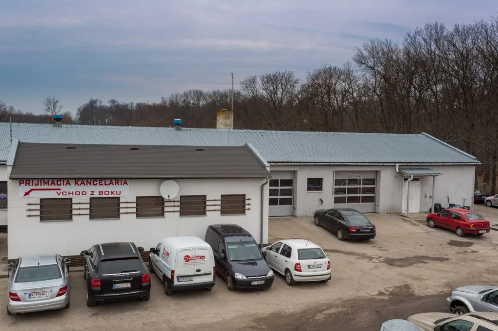

O firme
Od dovozu áut ku komplexnému servisu
DOVOZY.SK vznikla v roku 2007. Postupne rozšírila služby o autoservis, pneuservis, diagnostiku, klampiarske práce a odťahovú službu.
Vývoj spoločnosti
Zázemie budované okolo reálnych potrieb vodičov
Pôvodnou činnosťou bol dovoz a predaj jazdených áut zo zahraničia. Rozšírenie o servis a odťah vytvorilo ponuku, ktorá dnes pokrýva väčšinu situácií spojených s prevádzkou vozidla.
Vznik DOVOZY.SK
Firma začala dovozom a predajom jazdených motorových vozidiel zo zahraničia.
Rozšírenie služieb
Do ponuky pribudol autoservis, pneuservis a odťahová služba.
Väčšie zázemie
Prevádzka sa rozšírila o novú dielňu a skladové priestory.
Skúsenosti z motoršportu
Firma uvádza aktívnu účasť v motoršporte a prenos technických skúseností do diagnostiky a opráv bežných áut.

Technické zameranie
Široký záber. Výrazná skúsenosť s koncernom Daimler.
Servis sa podľa pôvodného webu venuje európskym, ázijským aj americkým značkám. Hlavnú špecializáciu tvoria Mercedes-Benz, AMG, Smart a Maybach.
- mechanické aj elektrikárske práce s vlastným vybavením,
- originálna aj univerzálna diagnostika,
- servisné prehliadky podľa plánu výrobcu,
- servis v záručnej aj pozáručnej dobe podľa podmienok firmy.
Čo firma zdôrazňuje
Kompetentná starostlivosť o vozidlo ako celok
Tieto body vychádzajú z prezentácie firmy na pôvodnom webe, nie z doplnených marketingových tvrdení.

Dôveryhodnosť
Doklady majú hovoriť konkrétne
Pôvodný web zobrazuje galériu ôsmich certifikátov a osvedčení, ale bez textového názvu, vydávateľa a platnosti. Preto ich tento návrh nepoužíva ako neurčité reklamné odznaky.
Doplniť aktuálne skeny certifikátov, presný názov, vydávateľa a platnosť. Následne ich možno zobraziť v samostatnom bloku s jasným popisom.
Prevádzka v Ivanke pri Dunaji
Máte otázku k servisu vášho auta?
Najrýchlejšie je ozvať sa prijímaciemu technikovi a popísať vozidlo aj problém.